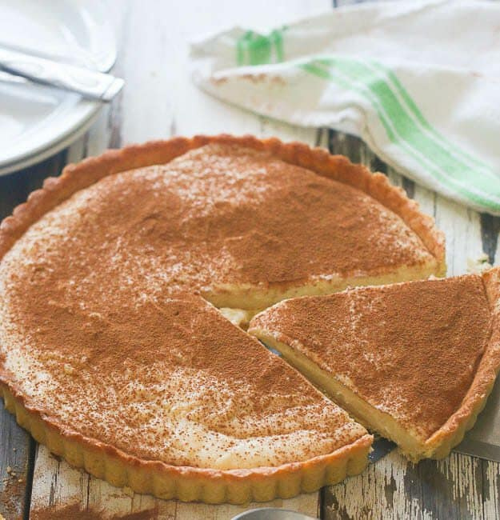

Vanilla Milk Tart – Creamy, light and simply delicious

Description
This delightful dessert is basically a milky custard pie. The addition of vanilla and cinnamon to this recipe makes it an incredible fragrant-packed sensation.
This vanilla milk tart recipe includes a pastry crust involving blind baking. However, if you are in a hurry, you can rather use a crumbled cookie crust. But if you have enough time, try baking the crust the old-fashioned way.
Ingredients
Pastry
- 2 cups flour
- 1 egg
- ½ cup sugar
- 2 teaspoons baking powder
- 125g butter
- pinch of salt
Filling
- 4½ cups milk
- 2½ tablespoons cornflour
- 1 cup sugar
- 3 eggs
- pinch of salt
- 2½ tablespoons flour
- 1 teaspoon vanilla essence
- 1 tablespoon butter
Steps
- Preheat the oven to180°C
- In a mixing bowl, cream butter and sugar together
- Add the egg and remaining ingredients to form a stiff dough
- Roll out the dough into a circle then press into a pie dish
- Bake blind for 15 minutes at 180°C
- Remove the paper and beans/rice and bake for a further 5 minutes until light brown
Filling
- Bring the milk to a boil on medium heat
- In a bowl, gently beat the eggs, sugar, flour, cornflour, vanilla, butter and salt until combined.
Add to the boiling milk and stir for 10 minutes or until the mixture thickens
- Set aside to cool down completely before pouring into the crust
- Refrigerate for an hour or two until the custard is completely set